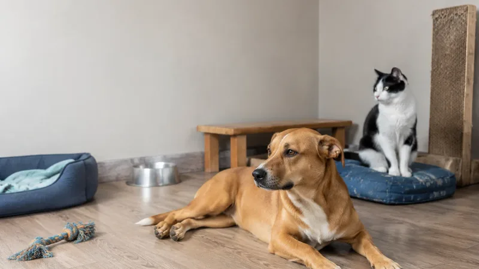

Cirurgia
Quando devo castrar meu pet? O que a literatura atual diz sobre a castração estratégica
Quando castrar seu pet? Entenda os benefícios e riscos da castração precoce e como definir o melhor momento com avaliação individualizada.
Ler artigo